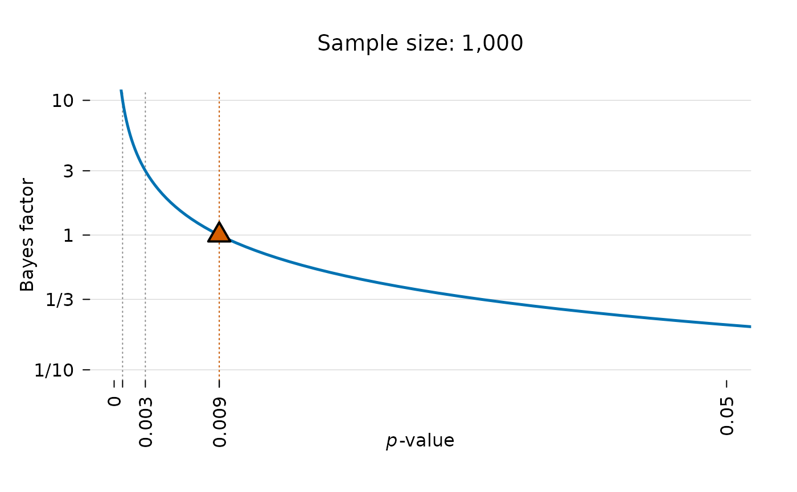
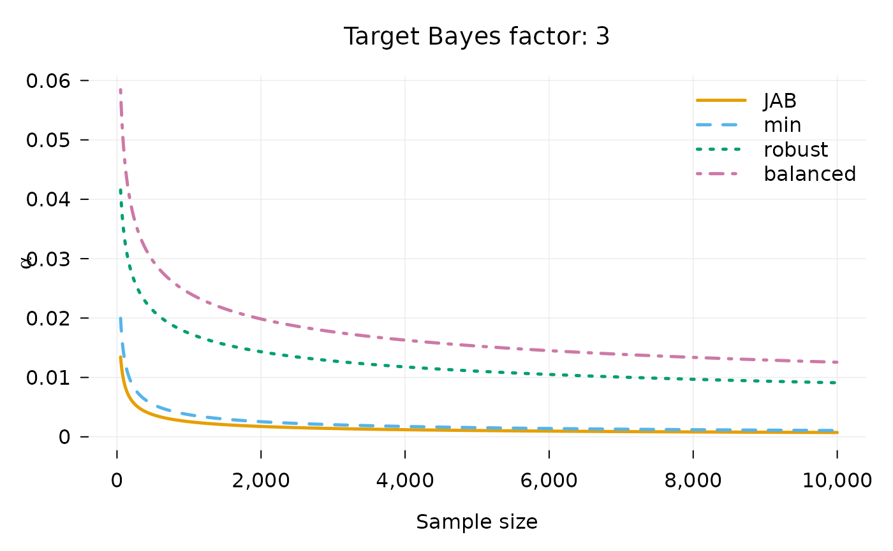

We wish to determine which alpha level is equivalent to a Bayes factor of 1. I.e. only reject the null if the data is at least as likely under the alternative as under the null. To do this, we need a way to connect the -value to the Bayes factor. The alphaN package does this for tests of coefficients in regression models.
Installation
To install the latest release version from CRAN use:
install.packages("alphaN")You can install the development version of alphaN from GitHub with:
# install.packages("devtools")
devtools::install_github("jespernwulff/alphaN")Basic functionality
This vignette provides an introduction to the basic functionality of alphaN. For full details on methodology, please refer to Wulff & Taylor (2024).
Setting the alpha level
Using the alphaN function, we can get the alpha level we
need to use to obtain a desired level of evidence when testing a
regression coefficient in a regression model.
Here is an example: We are planning to run a linear regression model
with 1000 observations. We thus set n = 1000. The default
BF is 1 meaning that we want to avoid Lindley’s paradox,
i.e. we just want the null and the alternative to be at least equally
likely when we reject the null.
alpha <- alphaN(n = 1000, BF = 1)
alpha
#> [1] 0.008582267Therefore, to obtain evidence of at least 1, we should set our alpha to 0.0086.
Plotting the relationship between the Bayes factor and p-value
The alphaN function works by mapping the
p-value to the Bayes factor. This relationship can be shown
using the JAB_plot. For instance:
JAB_plot(n = 1000, BF = 1)
The alpha level needed to achieve a Bayes factor of 1 is shown with a red triangle in the plot. Lines for achieving Bayes factors of 3 (moderate evidence) and 10 (strong evidence) are also shown by default. As it is evident a lower alpha level is needed to achieve higher evidence.
Alpha as a decreasing function of N
An important point of the procedure is that alpha will be set as a function of sample size. The larger the sample size, the lower the alpha needed such that a significant result can be interpreted as evidence for the alternative.
The graph below illustrates this relationship for the previous example:
Setting the prior
To set the alpha level as a function of sample size, we need to
choose the prior carefully. alphaN allows the user to
choose from four sensible prior options based on suggestions from the
previous literature: Jeffreys’ approximate BF
(method = "JAB"), the minimal training sample
(method = "min"), the robust minimal training sample
(method = "robust"), and balanced Type-I and Type-II errors
(method = "balanced"). method = "JAB" is a
good choice for users who want to be conservative against small effects,
method = "min" is for when the MLE is misspecified,
method = "robust" is for when the MLE is misspecified and
the sample size is small, and method = "balanced" is for
when Type-II errors are costly.
For instance, to achieve evidence of 3 for 1,000 observations while we ensure balanced error rates, we run
alphaN(1000, BF = 3, method = "balanced")
#> [1] 0.024221The package contains the convenience function
alphaN_plot that allows a quick comparison of alpha as a
function of sample size for the four different methods:
alphaN_plot(BF = 3)
Calibrating alpha to effect-size and moment Bayes factors
The four methods above all invert Jeffreys’ approximate Bayes factor,
whose prior places its mode on a null effect. Klauer, Meyer-Grant &
Kellen (2024) propose two alternative families of Bayes factors whose
priors instead center the alternative hypothesis on an effect size
chosen by the researcher: effect-size Bayes factors, and
moment Bayes factors, under which effects near zero are a
priori implausible. alphaN can calibrate the alpha level to
these Bayes factors, which answers the question: which alpha do I need
so that a significant result corresponds to a Bayes factor of at least
BF against an alternative centered on the effect size I
actually care about?
# alpha needed at n = 1000 for moderate evidence (BF = 3), targeting a
# medium-sized effect (de = 0.5)
alphaN(1000, BF = 3, method = "ES", de = 0.5)
#> [1] 0.002189564
alphaN(1000, BF = 3, method = "moment", de = 0.5)
#> [1] 0.0004913521Because the moment prior rules out effects near zero, the alpha level it implies falls much faster with the sample size than under JAB:
ns <- c(100, 1000, 10000)
round(rbind(JAB = alphaN(ns, BF = 3),
ES = alphaN(ns, BF = 3, method = "ES"),
moment = alphaN(ns, BF = 3, method = "moment")), 5)
#> [,1] [,2] [,3]
#> JAB 0.00910 0.00255 0.00073
#> ES 0.01185 0.00219 0.00058
#> moment 0.00788 0.00049 0.00002The prior settings follow the recommendations of Klauer et al. (2024)
and can be adjusted through the nu and r
arguments; see ?alphaN for details, including how to
recover the calibration of the default (Jeffreys-Zellner-Siow type)
Bayes factor of Rouder et al. (2009).